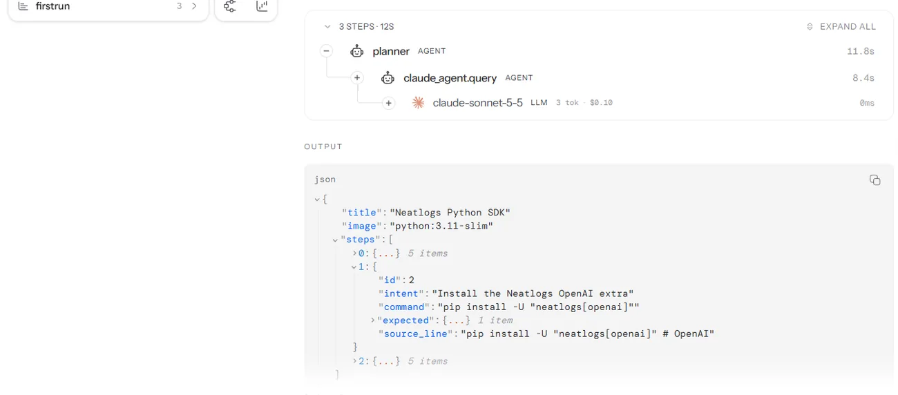
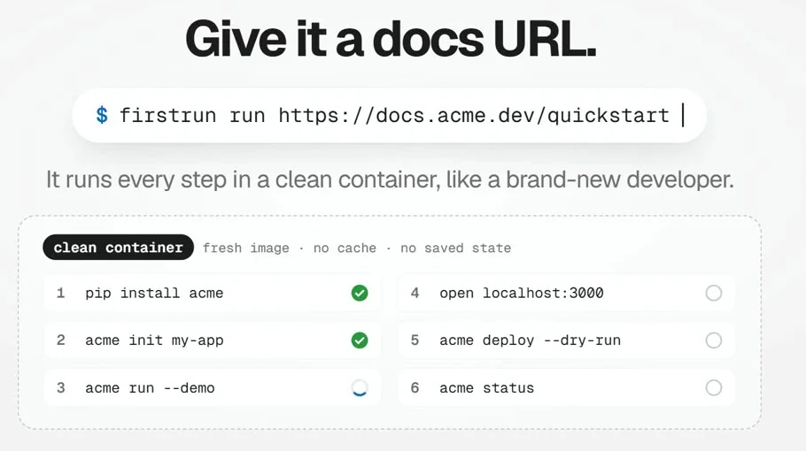
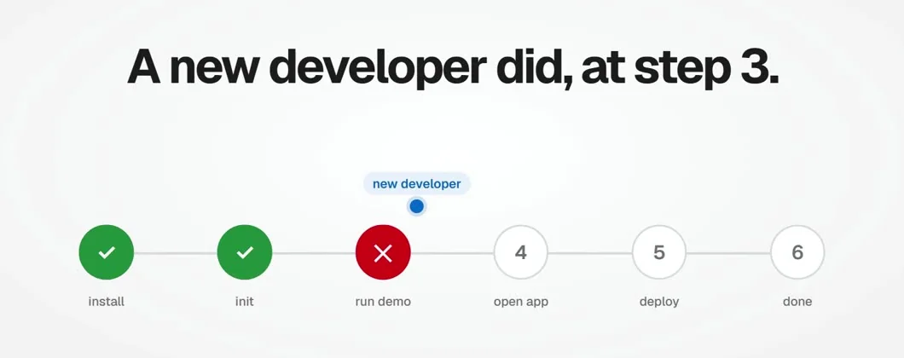
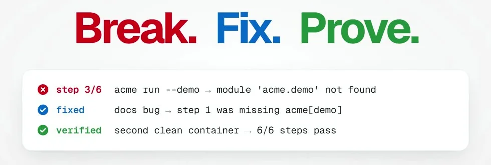
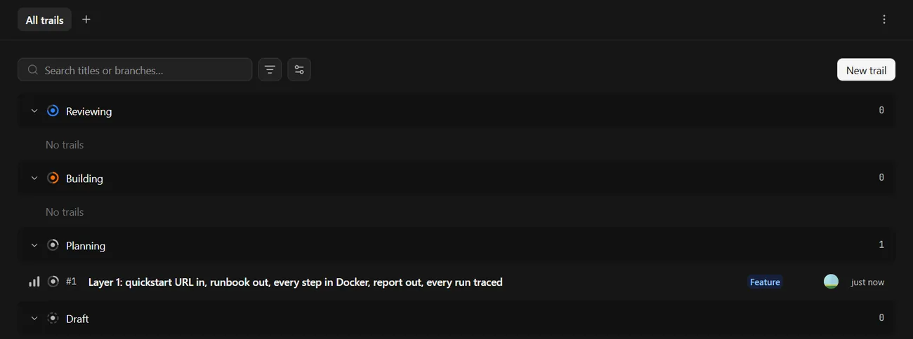
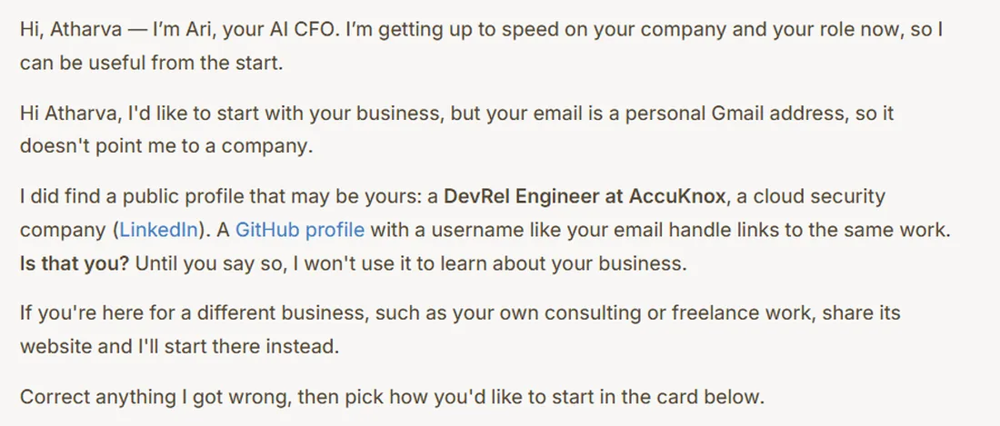

neatlogs
Traces every run.
The planner, executor and verifier show up as spans, so a bad run has a cause you can read.
neatlogs.com
Paste a docs URL. Your coding agent runs the quickstart in a clean container, finds the step that breaks, fixes it, and proves the fix.
A partial URL works. So does a tool name. Nothing leaves your browser.

FirstRun reads the page and plans one step per command.

Every step runs in a clean container, like a new developer. The first failure stops the run.

A fix is not done until a second clean container passes the whole quickstart.
Every run ends with a share link. Replay one.
Prefer the terminal? You need Docker and a Claude token from claude setup-token.
Traces every run.
The planner, executor and verifier show up as spans, so a bad run has a cause you can read.
neatlogs.com
Records every session.
Each commit carries the Claude Code session that wrote it, so any line traces to a prompt.
entire.io
Turns cost into a plan.
The measured cost per run from neatlogs goes to Ari, the cfo.ai agent, which models the pricing.
cfo.ai
Same four quickstarts, before and after the fix neatlogs found. Real open-source docs after that.
Every step is a post on @cultist_dev.
my neatlogs hackathon project has already caught doc issues for a chroma (24K+ github stars). chromadb's deprecated-config error sends you to its own migration guide. that page returns 404.
Read the post on X
#neatHack kickoff, 12:30 IST. FirstRun code before kickoff: 0 lines. neatlogs doctor probe: 7/7 PASS. Solo build. Submission opens Monday, 7 PM IST.
Read the post on X
#neatHack, day one. all three required tools are up. Entire: trail #1 created. neatlogs: first agent trace, 3 steps, 12s. cfo.ai: Ari read my public profile.
Read the post on X
your quickstart is the only part of your product tested by people who leave instead of filing a bug. so for #neatHack i'm building FirstRun. break. fix. prove.
Watch the video on X
a quickstart breaks the way an agent breaks. quietly. so the plan for this weekend: every FirstRun run becomes a trace in @neatlogs.
Read the post on X

Atharva is a DevRel engineer. He owns developer docs at AccuKnox and works with Altimate AI.
A quickstart that breaks without a sound is a docs bug nobody reports. FirstRun is his answer. He built it alone during the hackathon, in public.